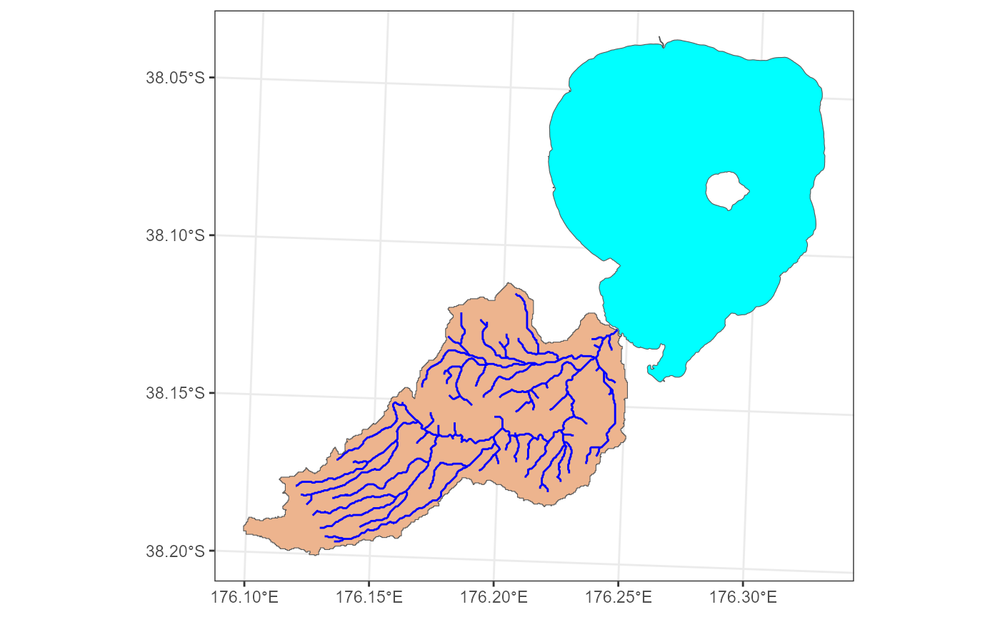
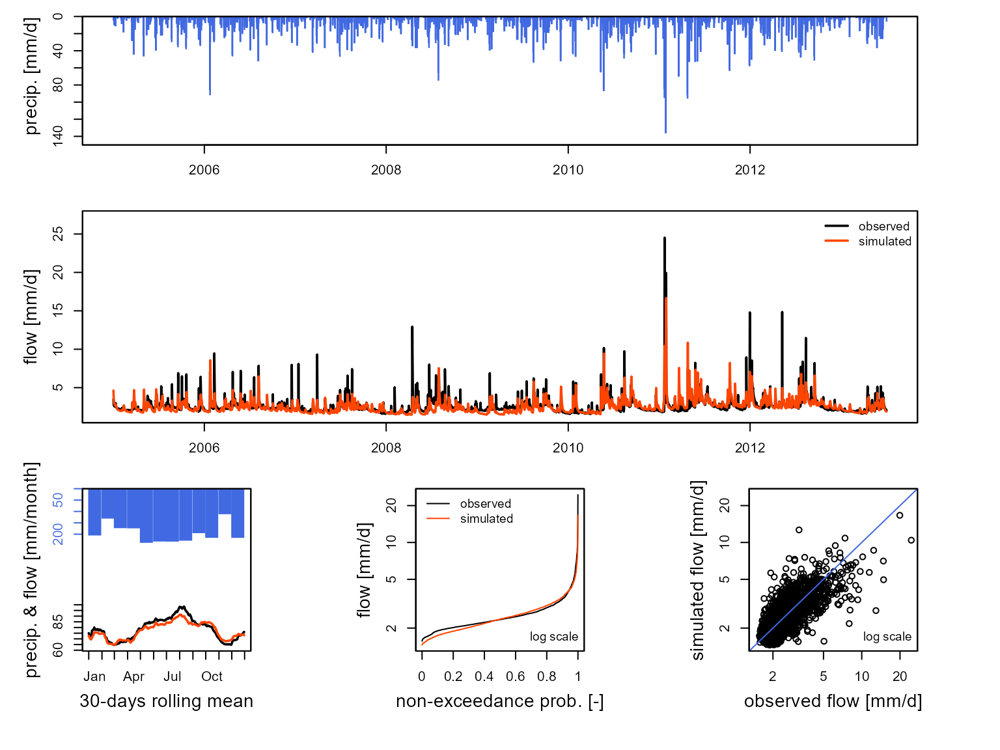

library(aemetools)
#> Warning: replacing previous import 'AEME::time' by 'terra::time' when loading
#> 'aemetools'Hydrological modelling - Run GR4J model
Here is simple example set up for one of the lake inflows into Lake
Rotorua. First, the input for the model are generated using the stream
ID (nzsegment), and spatial features (sf objects) of the reaches, lake
and catchment (including sub-catchments), observed discharge (if
available) meteorological data (air temperature and precipitation). It
recursively creates an upstream network using the nzsegment, then
combines the subcatchments of all the upstream reaches
(sf::st_union()) to calculate the area of the
catchment.
lat <- -38.079
data_dir <- system.file("extdata/hydro/", package = "aemetools")
lake <- readRDS(file.path(data_dir, "lake.rds"))
reaches <- readRDS(file.path(data_dir, "reaches.rds"))
catchments <- readRDS(file.path(data_dir, "catchments.rds"))
met <- readRDS(file.path(data_dir, "met.rds"))
obs_flow <- readRDS(file.path(data_dir, "obs_flow.rds"))
FUN_MOD <- airGR::RunModel_GR4J
id <- 4087861 # nzsegment
inputs <- make_GR_inputs(id = id, reaches = reaches, lake = lake,
catchments = catchments, obs_flow = obs_flow, met = met,
lat = lat, FUN_MOD = FUN_MOD,
plot = TRUE)
Within the airGR package, there are calibration
algorithms which allows you to calibrate the hydrological model if
discharge data for the reach is available. The calibrated parameters can
be passed to the run_GR function to run the selected
model.
#' airGR uses indices to run the model, so first we split our observed data in
#' half (0.5) for calibration and validation periods based on when the
#' observation data starts (which is provided in `inputs$data$start`).
idx_spl <- floor(nrow(inputs$data[inputs$start:nrow(inputs$data), ])
* 0.5)
#' Use a model warmup period as everything before when the observations start.
warmup <- 1:(inputs$start - 1)
# Set the indices for the calibration period
cal_idx <- inputs$start:(idx_spl + inputs$start)
# Run the calibration and assign the output
calib <- calib_GR(inputs = inputs, warmup = warmup, run_index = cal_idx)
#> Grid-Screening in progress (0% 20% 40% 60% 80% 100%)
#> Screening completed (81 runs)
#> Param = 432.681, -2.376, 83.096, 2.384
#> Crit. NSE[Q] = -12.8326
#> Steepest-descent local search in progress
#> Calibration completed (30 iterations, 289 runs)
#> Param = 21807.299, -9.151, 104.585, 2.003
#> Crit. NSE[Q] = 0.4836
# Extract the calibrated parameters
param <- calib$ParamFinalR
# Run the model
output <- run_GR(inputs = inputs, param = param,
warmup = warmup, run_index = cal_idx)
# Plot the output
plot(output, Qobs = inputs$data$Qmm[cal_idx])